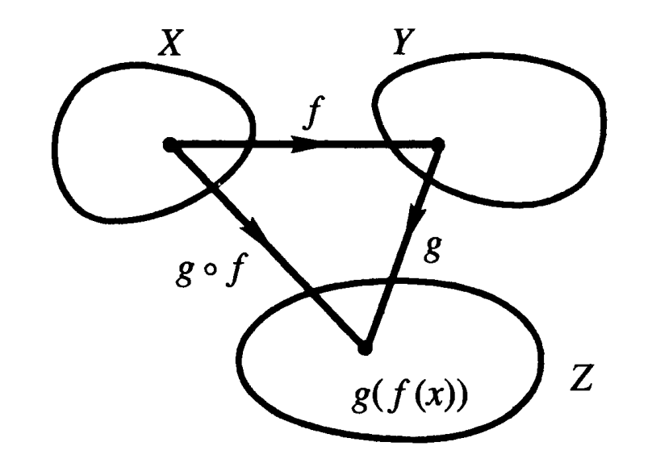
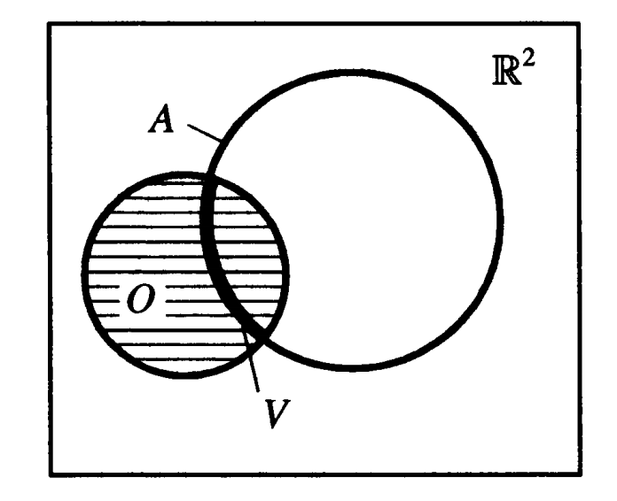
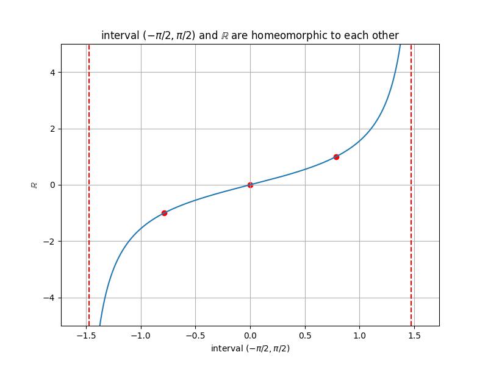
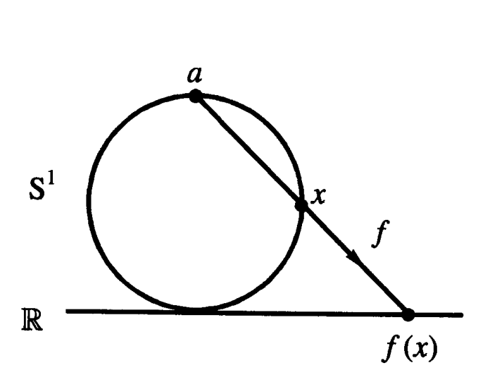

本系列是笔者自己在学习梁灿彬老师的著名教材《微分几何入门与广义相对论》时自己的学习笔记和一些理解，主要以书中非选读部分为主，除非是特别重要的选读内容则会有所提及，其余则略去不提。个人能力着实有限但仍打算将此笔记发表出来供有兴趣的伙伴参考，如有偏差错误欢迎各位指正。
1 集合与映射 #
1.1 集合论 #
相信本文的绝大部分读者都是在高中学数学时就已经接触过集合论的概念了，为了防止各位遗忘或者还未接触集合论的读者，笔者在本节将列出一些集合论中基础而核心的知识点，虽然基础，但是足够我们继续进行下去了。
- 定义1：一般地，我们把指定了的研究对象称作元素(element)或点(point)，而由被指定的若干元素构成的全体叫做集合(set)。
我们一般用大写的拉丁字母如\(A,B\)来表示一个集合，而用小写的拉丁字母如\(a,b\)来表示集合中的一个元素。若对集合\(X\)，存在元素\(x\)属于这个集合，则记作\(x\in X\)，符号“\(\in\)”代表属于，符号“\(\notin\)”代表不属于。如果一个集合不由任何元素构成，我们把其称作空集(empty set)，用符号“\(\varnothing\)”表示。在大多数问题中，只考虑集合整体而不考虑集合中的某些部分是不够的，为了能够描述一个集合的部分信息，我们定义子集的概念。
- 定义2：若集合\(A\)中的每一个元素\(x\)都属于集合\(X\)，我们就说集合\(A\)是集合\(X\)的子集(subset)，也说\(A\)含于(is contained in)\(X\)或\(X\)含(contains)\(A\)，记作\(A\subset X\)或\(X\supset A\)。每一个集合都是它自己的子集。我们规定\(\varnothing\)是任一集合的子集。
对于集合我们也可以比较两个集合之间是否存在相等关系，于是我们可以定义两个集合相等的条件。
- 定义3：若集合\(A\)中的每一个元素都是集合\(X\)中的元素，即\(A\subset X\)且\(X\subset A\)，那么我们说这两个集合相等，记作\(A=X\)。
如果存在两个集合\(A,X\)，满足\(A\subset X\)且\(A\ne X\)，则称集合\(A\)是集合\(X\)的真子集(proper subset)。可见\(\varnothing\)是任一集合的真子集。
对于集合我们也可以定义与代数四则运算类似的运算规律，对于集合\(A,B\)我们定义运算：
-
并集(union)：\(A\cup B :=\{x|x\in A\text{或}x\in B\}\);
-
交集(intersection)：\(A\cap B := \{x|x\in A,x\in B\}\);
-
差集(difference)：\(A-B := \{x|x\in A,x\notin B\}\);
-
补集(complement)：如果集合\(A\)是集合\(X\)的子集，则\(-A := \{x|x\notin A,x\in X\}\);
-
卡氏积(Cartesian product)：非空集合\(X,Y\)的卡氏积定义为\(X\times Y :=\{(x,y)|x\in X, y\in Y\}\).
同样的，类似代数的四则运算，集合的几种运算也满足一些规律，如下：
-
交换律：\(A\cup B = B \cup A\)，\(A \cap B = B \cap A\);
-
结合律：\((A \cup B) \cup C = A \cup (B \cup C)\)，\((A \cap B) \cap C = A \cap (B \cap C)\)，\(A\times(B\times C)=(A\times B)\times C\);
-
分配率：\((A \cap B) \cup C = (A \cup C) \cap (B \cup C)\)，\((A \cup B) \cap C = (A \cap C) \cup (B \cap C)\);
-
De Morgan 律：\(A-(B \cup C) = (A-B)\cap(A-C)\)，\(A-(B\cap C)=(A-B)\cup(A-C)\).
1.2 映射 #
在高中的时候我们就学过映射，知道映射就是一个从一个非空集合到另一个费控结合的对应法则。接下来我们将之前学过的一些特殊映射用新的语言进行描述。
- 定义4：对映射\(f:X\rightarrow Y\)，若满足对任一\(y\in Y\)有不多于一个逆像(或原像，即inverse image)，则称\(f\)是一一的(one-to-one)；若满足任一\(y\in Y\)都存在逆像，则称\(f\)是到上的(onto)。
实际上，在定义4中定义的“一一的”和“到上的”，分别对应着高中时学的“单射”和“满射”。在本章及之后章节中，凡是提到“一一映射”或“到上映射”均是指此处定义的“一一的”或“到上的”，需跟以前所学分辨清楚。
还有两种映射比较有趣，一种是满足\(f(x)=f(x')\)的常值映射，另一种是将两种映射复合起来的复合映射。关于复合映射的直观理解可以从下图中看出(记：\(g\circ f\)为映射\(f\)和\(g\)的复合映射)。

2 拓扑空间 #
2.1 开集 #
首先我们先将目光放到熟悉的\(\mathbb{R}\)空间上，在该空间上我们有对开子集有过定义，即在\(\mathbb{R}\)上的开区间。由于我们要将先前的定义进行进一步的抽象，从而方便将其移植到其他空间上。我们注意到，\(\mathbb{R}\)上的开子集满足一下三个易于推广的性质：
- \(\mathbb{R}\)，和\(\varnothing\)都是开子集；
- 有限个开子集之交仍是开子集；
- 任意个开子集之并仍是开子集.
这样我们就可以给出拓扑的定义了：
- 定义5：非空集合\(X\)的一个拓扑(topology)\(\mathscr{T}\)是\(X\)的若干子集的集合，满足：
- \(X,\varnothing \in \mathscr{T}\)；
- 若\(O_i\in \mathscr{T}，i=1,2,\cdots,n\)，则\(\underset{i=1}{\overset{n}{\bigcap}}O_i\in\mathscr{T}\)（其中\(\underset{i=1}{\overset{n}{\bigcap}}O_i\)代表这\(n\)个\(O_i\)之交；
- 若\(O_{\alpha}\in \mathscr{T}，\forall\alpha\)，则\(\underset{i=1}{\bigcup}O_{\alpha}\in\mathscr{T}\)（\(O_{\alpha}\in \mathscr{T}\)后加\(\forall\alpha\)表示每一个\(O_\alpha\)都属于\(\mathscr{T}\)，而且\(O_\alpha\)的个数没有限制。\(\underset{i=1}{\bigcup}O_{\alpha}\in\mathscr{T}\)表示所有\(O_\alpha\)之并属于\(\mathscr{T}\)）.
- 定义6：指定了拓扑\(\mathscr{T}\)的集合\(X\)称为拓扑空间(topological space)。若\(O\in \mathscr{T}\)，拓扑空间\(X\)的子集\(O\)称为开子集（简称开集）。
需要指出的是，对于一个集合的拓扑结构或者说拓扑，我们是可以认为指定的。你可以指定拓扑空间\((X,\mathscr{T})\)中\(\mathscr{T}=\{X,\varnothing\}\)，则这个指定显然满足定义5，则可以说这样的一种拓扑决定了一种特殊的拓扑空间，我们把这种拓扑叫作凝聚拓扑(indiscrete topology)；令拓扑\(\mathscr{T}\)为\(X\)全部子集的集合，则这种选择也满足定义5，我们把这种特殊拓扑叫作离散拓扑(discrete topology)。
接下来我们看一种在处理问题时最为常用的一种拓扑：令\(\mathscr{T}_u:=\{空集或\mathbb{R}中能表为开区间之并的子集\}\)，由这种拓扑决定的拓扑空间也是一种常用的拓扑空间，这种特殊拓扑称为\(\mathbb{R}\)的通常拓扑(usual topology)。然而在更加普遍的问题中，空间的维度可能不止1维，因此，我们有必要将这种常用的拓扑推广到\(\mathbb{R}^n\)的情况。
2.1.1 开球 #
稍微了解过微积分的读者都知道，我们用可以用领域来描述某个值附近的区域。于是我们可以尝试将这种方法推广到二维、三维甚至\(n\)维空间上，用于描述在所给点附近的范围。
- 定义7：开球(open ball)是指如集合\(B(x_0,r)=\{x\in\mathbb{R}^n||x-x_0|<r,r>0\}\)所描述的\(n\)维球体所包围的空间。
在上述定义中，\(x_0\)称作球心，\(r\)称作半径。当\(n=2\)时，我们又称这个时候的开球为开圆盘。有了开球的定义，我们就可以接着上文对\(\mathbb{R}^n\)的通常拓扑进行定义了。
- 定义8：设\(X=\mathbb{R}^n\)，则\(\mathscr{T}_u:=\{空集或\mathbb{R}^n中能表为开球之并的子集\}\)称为\(\mathbb{R}^n\)的通常拓扑，今后若无特殊声明，把\(\mathbb{R}^n\)看作拓扑空间时是指指定拓扑为通常拓扑的拓扑空间，即\((\mathbb{R}^n,\mathscr{T}_u)\)。
2.1.2 乘积拓扑 #
我们先前在集合中定义了卡氏积这种运算，卡氏积的直接物理意义其实就是将两个不同维的集合进行组合从而升维。同样的，我们也可以定义一种拓扑使得通过卡氏积运算得到的集合也有其对应的拓扑。
- 定义9：设\((X_1,\mathscr{T}_1)\)和\((X_2,\mathscr{T}_2)\)为拓扑空间，\(X=X_1\times X_2\)，定义\(X\)的拓扑为\(\mathscr{T}:=\{O\subset X|O可表为形如O_1\times O_2的子集之并,O_1\subset\mathscr{T}_1,O_2\subset\mathscr{T}_2\}\)，则\(\mathscr{T}\)称为\(X\)的乘积拓扑(product topology。
2.2 同胚 #
2.2.1 诱导拓扑 #
在集合中我们有子集的概念，再结合之前对拓扑的讨论，我们很容易会自然而然地想将子集概念移植到拓扑上，定义出一个*“子拓扑”*。事实上，我们也的确是这么做的，只不过如果机械地进行定义的搬运很有可能会出现大问题，如下面的例子：
如下图，在\(\mathbb{R}^2\)中以\(x_0\)为圆心的单位圆周\(S^1\)定义为\(S^1:=\{x\in\mathbb{R}^2||x-x_0|=1\}\)。设\(A\subset\mathbb{R}^2\)是\(S^1\)，则对于拓扑空间\((\mathbb{R}^2,\mathscr{T}_u)\)来说，由于\(A\)是一条曲线，则说明其窄到无法装下任何大小的开圆盘（一个一维的几何图形怎么可能能装下二维的几何图形嘛），于是我们就不能简单地将集合\(A\)所对应的拓扑选作原拓扑的子集，但是又不能随意指定，不然就失去了\(A\)作为子集的特殊性。

为了解决问题，我们可以从集合\(A\)本身出发构建独适合其的拓扑。于是我们有下述定义：
- 定义10：设\((X,\mathscr{T})\)是拓扑空间，\(A\)是\(X\)的任一非空子集，定义拓扑\(\mathscr{S}:=\{V\subset A|\exist O\in\mathscr{T},V=O\cap A\}\)。这样定义的拓扑\(\mathscr{S}\)叫作\(A(\subset X)\)的、由\(\mathscr{T}\)导出的诱导拓扑(induced topology)。
通过这样定义的拓扑\(\mathscr{S}\)既可以很自然地与我们的子集对应，又可以表示出与原拓扑空间有着千丝万缕的联系，某种意义上这样定义的拓扑空间可谓“子承父业”了，我们称\((A,\mathscr{S})\)为\((X,\mathscr{T})\)的拓扑子空间。同样的，我们通过上面相同的例子可以加深我们对于拓扑子空间的理解。前文讲过，由于\(A\)是一条曲线装不下任何大小的开圆盘，即用\(\mathbb{R}^2\)的\(\mathscr{T}_u\)衡量子集\(A\)不是开的，但是有了诱导拓扑\(\mathscr{S}\)，则不仅\(A\)是开的，而且对于\(A\)上任意长一段（不包括端点），如上图中标粗的\(V\)，虽然用\(\mathscr{T}_u\)衡量不是开的，但是用\(\mathscr{S}\)衡量是开的，因为存在\(O\in \mathscr{T}_u\)，使\(V=O\cap A\)。今后，当谈及某个集合子集的拓扑空间时，没有额外说明，我们默认是由诱导拓扑构成的拓扑子空间。
2.2.2 同胚 #
我们知道，两个集合之间可以通过构建映射而联系起来，那么是否也可以通过构建某种映射将两个拓扑空间联系起来呢？下面不加证明地给出关于两个拓扑空间映射连续性等价的定义：
- 定义11a：设拓扑空间\((X,\mathscr{T}),(Y,\mathscr{S})\)，映射\(f:X\to Y\)为连续的，若\(\forall O\in\mathscr{S},f^{-1}[O]\in \mathscr{T}\)，其中\(f^{-1}[O]=\{x\in X|f(x)\in O\}\)；
- 定义11b：设拓扑空间\((X,\mathscr{T}),(Y,\mathscr{S})\)，映射\(f:X\to Y\)称为在点\(x\in X\)处连续，若\(\forall f(x)\in G',G'\in\mathscr{S}\)，\(\exist G\in\mathscr{T}\)使\(x\in G\)且\(f[G]\subset G'\)。当映射\(f:X\to Y\)在所有点\(x\in X\)处连续，则称该映射连续。
这样，我们就不仅能通过映射将两个拓扑空间联系起来，而且还能判断这种映射究竟是否是连续的了。对于任意普通函数\(y=f(x)\)的连续性和可微性，我们可以用\(C^r\)表示，其中，\(r\)非负数，表示存在的最高阶导数，\(C^r\)表示函数是\(r\)阶导函数存在且连续，物理中我们常常默认函数是\(C^{\infty}\)的，代表任意阶可导且连续，称为光滑(smooth)。在我们以前研究函数性质的时候，我们知道一个函数如果存在反函数的话，那么说明这种映射能够很强地将定义域和值域进行关联。经过前面的讨论，我们也会相对自然地想到，是否也存在类似的映射将两个拓扑空间紧密关联，而不是简单地连续变化。
- 定义12：我们称拓扑空间\((X,\mathscr{T}),(Y,\mathscr{S})\)是互相同胚(homeomorphic to each other)的，若\(\exist f:X\to Y\)满足下列条件时，称为从\((X,\mathscr{T})\)到\((Y,\mathscr{S})\)的同胚映射，简称同胚(homeomorphism)：
- \(f\)是一一到上的；
- \(f,f^{-1}\)都连续。
虽然我们可以通过定义11将前文中映射的\(C^0\)性移植到拓扑空间中，但是由于我们一直都没有定义拓扑空间中如距离的概念，所以映射的\(C^r\)性不能移植入拓扑空间。事实上，对于拓扑空间中映射的最高要求已经在同胚的定义中体现出来了，同胚表明两个拓扑空间不仅点与点之间能够建立起一一对应的关系，两个集合的开子集之间也建立起了一一对应的关系，这就表明由拓扑结构所决定的所有性质可以由同胚从一个拓扑空间“转移”到另一个拓扑空间中，而且信息不会有所损失，即“全息的”。因而，在纯拓扑的角度来看，两个互相同胚的拓扑空间“像得不能再像”，可以视作相等或认同。
为了更好地理解同胚关系，我们可以看看下面的两个例子：
- 任一开区间\((a,b)\subset \mathbb{R}\)与\(\mathbb{R}\)同胚。
为了说明这个例子成立，我们只需找到一个函数满足定义12即可，为此，我们先从基本初等函数开始考虑是否能满足要求。如下图所示，我们想到，对于正切函数\(\tan x\)来说，当\(x\in(-\frac{\pi}{2},\frac{\pi}{2})\)时有\(\tan x\in\mathbb{R}\)且连续，同时在这个区间内其反函数也是连续的，于是我们就找到了一个确定开区间与\(\mathbb{R}\)同胚。

至于如何将确定开区间变换到任一开区间上，我们可以对此进行简单的变量代换，做可逆线性变换\(y=\frac{\pi}{b-a}(x-\frac{a+b}{2})\)，则有当\(x\in(-\frac{\pi}{2},\frac{\pi}{2})\)时\(y\in(a,b)\)。这样就把任意的开区间与先前确定的开区间联系起来了。
- 如图所示，圆周\(S^1\subset\mathbb{R}^2\)配以诱导拓扑可看作拓扑空间，它与\(\mathbb{R}\)是否同胚？

关于这个问题，如果严谨论证的话需要用到原书中关于“紧致性”的讨论，但是笔者在此举例并不打算利用紧致性进行严格证明二者并不同胚，而是打算从直觉上理解二者为什么不同胚。正如上图中所绘，我们可以使用一根直线来代表\(\mathbb{R}\)，将圆周平移到与这条直线相切，记切点为\(O\)，与切点对应的点为\(a\)。从\(a\)点引出一条射线交圆周于\(x\)，交直线于\(f(x)\)，这条直线作为从圆周到\(\mathbb{R}\)的映射\(f\)。在这个映射中，首先我们知道这是一个连续映射，因为当\(x\)逐渐靠近\(a\)时对应的像\(f(x)\)在\(\mathbb{R}\)上连续变化，但是对于\(x\to a\)时，\(f(x)\)找不到一个对应的值，即点\(a\in S^1\)无像，剩下的\(S^1\)上的点可以找到与之一一对应的\(\mathbb{R}\)上的点，我们可以形象地理解为从\(a\)点处“剪开”，剩下的圆被摊平后拉伸成为了\(\mathbb{R}\)空间。学过一点复分析的读者就会说了，这个\(S^1\)不就是二维平面上的黎曼球嘛，\(a\)点应该是对应着\(\infty\)的，怎么会没有对应的值呢？首先，\(\infty\)就不是一个实数，或者说就不是一个通常意义上的“数”。其次，符号\(\infty\)只是我们用来代表一个绝对值非常大的数的“记号”，即对应着表达式\(\forall X\in\mathbb{R}, \exist x\in\mathbb{R},|x|>|X|\)所代表的意思，应该从一个动态的角度来理解这个符号的意思，即“你无论多大我总比你大”的含义，代表了一个“边界外的边界”，故不能用某一个具体的数来代表，这样看来\(a\)点对应的像就能自然理解其不存在了。
这个讨论的意义在于，如果我们说两个拓扑空间是互相同胚的时候，那么我们可以从直观上理解为两个拓扑空间可以通过类似*“捏橡皮泥”式的映射相互转换，只要不进行“剪切”和“粘黏”*操作，这种映射就是同胚映射，这也是拓扑学被通俗地称为“橡皮膜上的几何学”的原因之一。虽然这种几何学并没有定义距离这一概念，乍看上去没有什么用处，但是这对于一些看上去非常复杂的几何结构有出奇制胜的效果，例如在电路中的复杂电路网络的研究就有利用拓扑学发展的“网络拓扑学”这一小小的分支。
2.3 再谈集合 #
先前我们提到过将\(\mathbb{R}\)中领域的概念拓展到\(\mathbb{R}^n\)上形成开球的概念，随着我们对于拓扑的理解逐渐加深，可以合理类比我们是否能在拓扑的意义上构建领域的概念。于是我们有了以下的定义：
-
定义13：\(N\subset X\)称为\(x\in X\)的一个领域(neighborhood)，若\(\exist O\in\mathscr{T}\)，使\(x\in O\subset N\)。若\(N\in\mathscr{T}\)则称为开领域。
-
定义13’（子集的领域）：\(N\subset X\)称为\(A\subset X\)的一个领域，若\(\exist O\in\mathscr{T}\)，使\(A\subset O\subset N\)。
下面我们不加证明地给出开集和领域的关系定理：
- 定理1：\(A\subset X\)是开集，当且仅当\(\forall x\in A\)，\(A\)是\(x\)的领域。
我们都知道，在\(\mathbb{R}\)中存在开区间、闭区间、半开半闭区间三种区间，先前我们把开区间经过抽象定义了开集，我们是否可以在拓扑空间中定义类似闭区间的概念呢？直接定义这样的概念存在着不小的难度，但是我们可以从反面想，闭区间的补集不就是一个开区间吗？这样我们就找到了一个易于抽象和推广的性质，也就有了下面的定义：
-
定义14：\(C\subset X\)叫作闭集(closed set)，若\(-C\in\mathscr{T}\)。
-
定理2：闭集有如下的性质：
- 任意个闭集的交集是闭集；
- 有限个闭集的并集是闭集；
- \(X\)及\(\varnothing\)是闭集。
可见，任何拓扑空间\((X,\mathscr{T})\)都有两个既开又闭的子集，即\(X\)和\(\varnothing\)。
在研究函数的积分时我们常常会要考虑函数所在定义域是否是连通的，同样我们也可以在拓扑空间中对连通下定义：
- 定义15：拓扑空间\((X,\mathscr{T})\)称为连通的(connected)，若它除了\(X\)和\(\varnothing\)外没有其他既开又闭的子集。
我们一直以来学到的判断是否连通的方法是在集合中任意取两点，若两点可以用一根仅在集合中的连续曲线连接，则说明该集合连通，其实这个定义的连通准确来说是“弧连通”。后面在讨论概念“弧连通”时会再次提及此处对于连通的定义，目前读者们可以暂时将二者认同，但是需知道本处对连通的定义与弧连通的定义存在微妙差别即可。
设\((X,\mathscr{T})\)为拓扑空间，\(A\subset X\)。分别定义\(A\)的闭包、内部和边界以及相关性质如下：
-
定义15：\(A\)的闭包(closure)\(\bar{A}\)是所有含\(A\)的闭集的交集，即
\(\bar{A}:=\underset{\alpha}{\bigcap} C_{\alpha}\)，\(A\subset C_{\alpha}\)，且\(C_\alpha\)为闭。
-
定义16：\(A\)的内部(interior)\(\text{i}(A)\)是所有含于\(A\)的开集的并集，即
\(\text{i}(A):=\underset{\alpha}{\bigcup}O_\alpha\)，\(O_\alpha\subset A\)，\(O_\alpha\in\mathscr{T}\)。
-
定义17：\(A\)的边界(boundary)\(\dot{A}:=\bar{A}-\text{i}(A)\)，\(x\in\dot{A}\)称为边界点。\(\dot{A}\)也记作\(\partial A\)。
-
定理3：\(\bar{A},\text{i}(A),\dot{A}\)有以下性质：
- \(\bar{A}\)为闭集，\(A\subset\bar{A}\)，\(A=\bar{A}\)当且仅当\(A\)为闭集；
- \(\text{i}(A)\)为开集，\(\text{i}(A)\subset A\)，\(\text{i}(A)=A\)当且仅当\(A\in\mathscr{T}\)；
- \(\dot{A}\)为闭集。
下面的定义用于衔接本章与下章开篇内容：
- 定义18：\(X\)的开子集的集合\(\{O_\alpha\}\)叫\(A\subset X\)的一个开覆盖(open cover)，若\(A\subset\underset{\alpha}{\bigcup}O_\alpha\)。也可以说\(\{O_\alpha\}\)覆盖\(A\)。